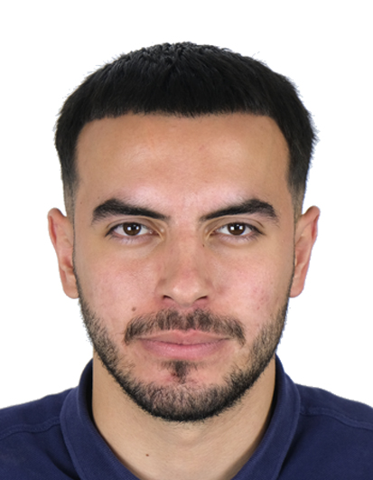

Unë jam Ylli Dallku, i lindur më 16.05.1997 në Prishtinë.

Studimet e nivelit Bachelor i kam përfunduar në Universitetin e Prishtinës Hasan Prishtina
, në Fakultetin Ekonomik, më saktësisht në drejtimin Banka, Financa dhe Kontabilitet.
Gjithashtu, vijoj studimet e nivelit master në Fakultetit Ekonomik në Prishtinë, në departamentin përkatës.
Karriera ime profesionale ka filluar para 5 vitesh në Odën Ekonomike të Kosovës OEK
, duke vazhduar të jap kontributin në po të njëjtin institucion për gjatë tërë këtyre viteve radhazi.
Dëshira ime për programim ka qenë e kahershme, andaj me plotë dëshirë kam vendosur të bëjë hap para në karrierë duke ndryshuar profesionin dhe duke i'u përkushtuar kësaj fushe.
Gjithë të mirat,
Ylli
Për kontakt: